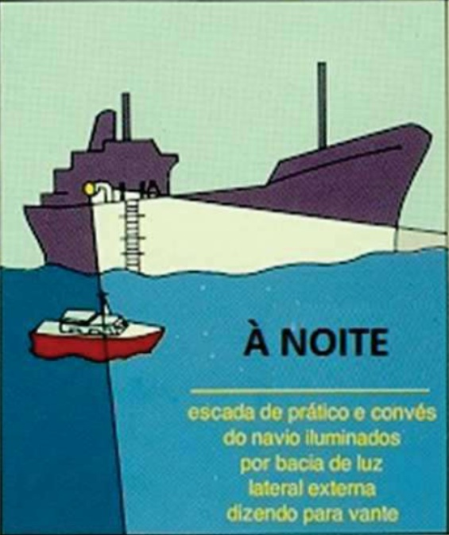

ANEXO B
SEGURANÇA DA TRIPULAÇÃO A BORDO
1 - GENERALIDADES
A preocupação com a segurança envolve um amplo espectro, desde o projeto do ambiente de trabalho, ou seja, o navio, à sinalização apropriada (como, por exemplo, placas indicando que o compartimento adjacente é um paiol de munição etc); da utilização de material de consumo aprovado às técnicas de manutenção e estocagem apropriadas; do controle de ruído ambiental à educação dos tripulantes, de modo a possibilitar a adoção de normas e procedimentos capazes de criar e manter condições de trabalho saudáveis e seguras a bordo.
Como regra geral, o projeto de um navio incorpora a experiência acumulada ao longo dos anos, no que se refere à melhoria das condições de trabalho. Neste campo, é reduzida a capacidade de manobra de um Comandante. Mas a atividade é ampla no que se refere à manutenção das condições de segurança, tanto pela preservação das características de construção, quanto pela adoção coletiva de procedimentos apropriados, de modo a tornar as precauções de segurança parte do cotidiano da tripulação.
Os capítulos deste manual, em uma abordagem específica, apresentam aspectos que influenciam diretamente a manutenção da segurança do pessoal e do material a bordo, sem, entretanto, esgotar o assunto.
A segurança do pessoal e do material merece atenção especial, seja durante a realização de uma faina, adestramento, ou simplesmente nos eventos de rotina em um navio atracado ou em viagem. Qualquer um que constatar que a segurança está ou pode vir a ser ameaçada, deve comunicar o fato imediatamente ao mais antigo presente, para que tome as providências cabíveis, que podem significar, até mesmo, a interrupção da faina ou exercício, até que a situação de perigo seja afastada.
Chama-se à atenção, em especial, para fainas como: de munição, transferência de combustível, transferência de carga, reboque, operações aéreas, exercícios de tiro e etc. Todas devem ser precedidas de “briefings”, onde os principais aspectos de segurança sejam enfatizados. Após cada evento, realiza-se uma reunião de crítica (“debriefing”), onde os acertos são realçados e os erros apontados. Deste modo, colhem-se ensinamentos que aprimorarão a execução de tais fainas no futuro.
1 - GENERALIDADES (Continuação)
Outras recomendações importantes: Todo o material a ser empregado ou que possa ser empregado em uma faina, deve ser rigorosamente verificado e testado antes de seu início, bem como ser posicionado de modo a estar à mão quando for necessário.
Deve ser mantida atualizada na enfermaria, na estação Central do CAV e no Portaló, a relação dos materiais perigosos existentes a bordo, por categoria, discriminando local, precauções para armazenagens, manuseio e procedimentos a serem adotados (no mar e em terra) no caso de contaminação do pessoal. O pessoal a bordo deve manter-se adestrado nos procedimentos de emergência, especialmente os relativos aos materiais que empregam combustíveis especiais (por exemplo: torpedos e mísseis), berílio, halon e outros.
2 - PRECAUÇÕES DE SEGURANÇA NAS FAINAS MARINHEIRAS
As fainas marinheiras devem ser realizadas sem conversas paralelas. Quem conduz a faina tem que manter o controle da mesma durante todo o tempo. Nas fainas marinheiras em conveses abertos, o uso do colete de flutuabilidade permanente (tradicionalmente conhecido como colete de paina) ou auto-inflável é obrigatório.
Nas fainas marinheiras em que houver a necessidade de uso de capacetes, estes deverão seguir a codificação de cores abaixo especificada:
| COR | FUNÇÃO |
|---|---|
| BRANCO | Oficiais |
| BRANCO COM UMA CRUZ VERDE | Oficial de Segurança |
| BRANCO COM UMA CRUZ VERMELHA | Enfermeiro |
| AMARELO | Sr. Mestre |
| VERDE | Raqueteiro / Telefonista |
| VERMELHO | Lançador de reboque/fuzil lançaretinida |
| MARROM | Operador do cabrestante/guincho / CAV |
| PÚRPURA | Reparador |
| AZUL | Laboradores de cabos / Faxina do Mestre |
| LARANJA | Verificador/Inspetor / Pessoal de fornecimento |
| CINZA | Outros |
2.1 - Cuidados quando trabalhando com espias e cabos
Os seguintes procedimentos aumentam a segurança da faina:
a) usar luvas do tipo “raspa de coco” ou de vaqueta quando laborando cabos;
b) o pessoal envolvido deve remover anéis, relógios, pulseiras e outras peças que possam ser inadvertidamente “fisgadas” pelos dispositivos, cabos e carga;
2.1 - Cuidados quando trabalhando com espias e cabos (Continuação)
c) não exercer muito esforço em um cabo que já tenha trabalhado próximo a sua carga de ruptura ou em serviço contínuo;
d) não permitir a presença de pessoal nas proximidades de cabos sob tensão;
e) nenhuma pessoa deve ficar pelo lado interno (vivo) dos cabos que estejam laborando por qualquer retorno; (ver fig. 1)
f) o primeiro homem que guarnece qualquer cabo sob tensão deve manter um socairo seguro de um cabrestante, cabeço, buzina, rodete ou de qualquer outro aparelho ou equipamento por onde o cabo seja tracionado ou laborado;
g) o pessoal envolvido nas fainas de dobrar a amarração ou de clarear o convés, mesmo após a volta do DEM, deverá permanecer com o colete adequadamente vestido, até o pronto da faina, posto que, no caso de algum acidente/incidente (como por exemplo: partir um cabo, arrebentar a balaustrada, etc), que acarrete queda do homem ao mar, será mais uma proteção;
h) Todas as espias e cabos de reboque devem possuir fusível.
Quando laboramos cabos e espias, devemos observar quatro regras de segurança, independente do material de fabricação:
I) Não se deve ficar por dentro de cabo laborando ou na direção em que ele é tracionado;

Figura 1
II) Não se deve aumentar a carga (esforço) num cabo depois de se travar ou de se ter dado volta num cunho, cabeço ou similar;
III) É imperativo a presença de um observador de segurança em todos os casos em que se laboram cabos;
IV) Manter socairo mínimo de 2 metros.
2.2 - Fainas de transferência no mar
Os seguintes aspectos devem ser observados durante essas fainas:
a) manter um enfermeiro disponível na estação, bem como um oficial com a função de Oficial de Segurança;
b) observar precauções de perigos de irradiação eletromagnética. Navios transferindo munição por reabastecimento conectados devem estar sob a mesma condição de silêncio devido ao manuseio de munição sensível;
c) pessoal que trabalha com a carga não deve pisar em um estropo da rede que estiver talingado no gato;
d) o pessoal envolvido no reabastecimento deve portar a palamenta de segurança exigida, de acordo com o parágrafo 2.10.3 e fig. 2-22 do NTTP 4-01.4;
e) todo o pessoal deve estar atento a um possível movimento da carga devido ao jogo do navio. Ninguém deve se posicionar entre a carga e a borda do navio;
f) teques, “spanwires”, cabos de sustentação de aço devem ser presos ao tambor do guincho por uma presilha ou grampo especialmente projetado, para minimizar a possibilidade de danos se um desengajamento em emergência for necessário;
g) a balaustrada não deve ser arriada a não ser que absolutamente necessário. Se abaixada, uma balaustrada de segurança temporária deve ser montada usando neste caso o cabo de especificação contida no NTTP 4-01.4;
h) o pessoal de cada estação deve remover anéis, relógios, pulseiras e outras peças que possam ser inadvertidamente “fisgadas” pelos dispositivos, cabos e carga;
2.2 - Fainas de transferência no mar (Continuação)
i) todo o pessoal deve estar adestrado para: manter-se afastado de retornos, seios de cabo, guarnecer os cabos se posicionando para dentro de bordo e, se praticável, permanecer a pelo menos 1,8 m de distância de moitões, cunhos, sarilhos, cabrestantes etc. por onde os cabos gurnem. Todo o pessoal que guarnece a montagem do dispositivo, o cabo de distância, o cabo telefônico entre estações devem estar avante e no lado de dentro de bordo. Se necessário ficar à ré, o pessoal deve permanecer atento ao risco em potencial;
j) usar corretamente os contrapinos nas patolas. Não forçar a abertura excessiva de contrapinos. Observar o NTTP 4-01.4 (fig 2-15) para fazê-lo;
k) todo pessoal deve ser alertado para manter-se afastado de cargas suspensas e de pontos de fixação de dispositivos até que toda a carga esteja segura no convés. Todo o pessoal deve estar atento e nunca virar as costas para a carga que se aproxima;
l) O pessoal trabalhando em mastros ou superestruturas ou por fora da borda livre ou balaustrada, deve usar cintos de segurança e cabos de segurança;
m) os cabos de fixação devem ser passados imediatamente quando da montagem do dispositivo para se preparar para um possível desengajamento em emergência;
n) as projeções móveis, localizadas no bordo da faina, devem ser rebatidas e peiadas;
o) os cabos devem ser colhidos de forma clara para correrem livremente;
p) o convés, nas proximidades da estação de transferência, deve ser tratado com material antiderrapante;
q) deve existir material para combate a incêndio pronto para uso na estação (somente nas fainas de transferência de óleo combustível) e todo o pessoal deve estar apto a operá-lo;
r) cumprir os procedimentos de segurança do NTTP 4-01.4 relativos à passagem da retinida, visando a proteção da guarnição do outro navio;
s) somente destalingar o span-wire (ou cabo de sustentação) quando ele tiver sido folgado, e por ordem do fornecedor;
t) nas fainas de transferência de óleo pelo método STREAM, o recebedor somente solicitará ao fornecedor que tensione o span-wire após receber autorização da Manobra (que posicionará o navio na distância mínima de 140 pés). Acordo tabela de distâncias do PO - 0301;
u) todos os olhais e acessórios das estações de transferência têm que sofrer teste de carga, de acordo com os valores previstos na NTTP 4-01.4.
2.3 - Faina de reboque (rebocador e rebocado)
Para a faina de reboque as precauções são as seguintes:
a) manter à mão as ferramentas adequadas para uso imediato na estação de reboque e para o desengajamento em emergência;
b) proibir o trânsito pelo convés na área de passeio do cabo de reboque; se imprescindível, fazê-lo agachado por fora do horse-bar, e mantendo o cabo à vista, de modo a proteger-se em uma emergência (aplicável aos navios dotados de máquina de reboque - NSS, NA, rebocadores e corvetas Classe “Imperial Marinheiro”);
c) manter um enfermeiro com “kit” de primeiros socorros na área;
d) o Comando deve ser mantido informado da direção e esforço sobre o mensageiro do cabo de reboque, a fim de, entre outros aspectos, evitar risco para o pessoal no convés;
e) os homens da manobra da amarra devem estar cientes dos procedimentos para largar o cabo de reboque em emergência;
f) nas manobras de atracação/desatracação, somente dar o pronto para o início da puxada após os militares que deram a volta do cabo de reboque pelos cabeços terem se abrigado.
2.4 - Fainas de recolhimento de homem ao mar e náufragos
a) Os homens que guarnecem as estações para o recolhimento devem portar coletes de flutuabilidade permanente ou auto-infláveis e luvas;
b) A balaustrada de segurança em viagem deve estar passada;
c) Os homens, que trabalham por fora da balaustrada de segurança, devem usar cinto de segurança;
d) O nadador deve vestir a roupa de neoprene e a sua palamenta completa (sling, colete salva-vidas inflável, faca, nadadeiras, máscara, esnorquel e lanterna tipo “flashlight”);
e) O nadador reserva deve estar com a palamenta completa, pronto a entrar em ação caso necessário;
f) Por ocasião de recolhimento noturno, o nadador deve possuir um “cyalume” preso ao “sling”, pela parte posterior, próximo ao engate do gato do cabo de recolhimento (se possível, também uma lanterna estroboscópica fixada ao punho, para auxiliar na sinalização para a estação);
g) Usar cabo de recolhimento de flutuabilidade positiva (polipropileno);
h) Em situação de guerra, no caso de recolhimento de inimigo, manter homens armados postados em local elevado e próximo à estação de recolhimento, de modo a prevenir-se contra eventual ação adversa (não esquecer de revistar os náufragos rigorosamente, tão logo cheguem a bordo, independentemente do estado de saúde aparente);
i) Um atirador armado com fuzil guarnecerá a estação de recolhimento ou a lancha, pronto a atirar em tubarões que se aproximem do homem sendo recolhido.
ANEXO B
SEGURANÇA DA TRIPULAÇÃO A BORDO
2.5 - Embarque e desembarque de prático
Os práticos, por vezes, embarcam e desembarcam em condições adversas e perigosas. Por este motivo, foram estabelecidas normas nacionais e internacionais que visam prover segurança nas fainas de embarque e desembarque de práticos, as quais estão consolidadas nas Normas da Autoridade Marítima para a Navegação em Mar Aberto, NORMAM-01/DPC.
2.5.1 - Estado de Conservação e Segurança
A escada de prático deve ser homologada pela Diretoria de Portos e Costas e mantida segura e em bom estado.
A escada de prático deve permitir o embarque seguro do prático e também poder ser utilizada por outras pessoas, por ocasião da entrada ou saída de um navio.
2.5.2 - Localização
A escada de prático deve ter a possibilidade de ser instalada em qualquer dos bordos, numa posição segura em que não haja o risco de receber descargas eventuais provenientes do navio. Deverá estar suficientemente afastada, na medida do possível, das arestas do navio e situar-se, preferencialmente, na parte plana do costado a meia-nau.
2.5.3 - Operação
a) Para receber o prático, a escada deverá ser lançada a sotavento;
b) Para que possa ter acesso ao navio, com segurança e comodidade, o prático não deverá subir menos do que 1,50 m, nem mais do que 9 m;
c) Quando a altura a ser escalada pelo Prático for superior a 9 m, a subida a bordo, a partir da escada de prático, deve ser efetuada com o auxílio da escada de portaló;
d) Em caso de necessidade, devem ser mantidas prontas para serem usadas duas bogas, solidamente amarradas ao navio, tendo pelo menos 32 mm de diâmetro;
e) Se o navio estiver em movimento, o embarque ou desembarque do prático deve ser feito com máquinas adiante e velocidade máxima de 5 a 6 nós;
f) A escada deve ser montada por militar capacitado e sob a supervisão de um Oficial.
2.5.4 - Fixação
Os navios devem ser providos de dispositivos apropriados para permitir a passagem de maneira segura e cômoda do topo da escada de prático para o convés ou escada de portaló. Quando esta passagem se efetuar por meio de uma escada de borda-falsa, esta deve ser solidamente fixada à balaustrada da borda-falsa. Os dois balaustres devem ter um afastamento entre 70 e 80 cm, ser fixados rigidamente ao convés do navio, ficando no mínimo a 1,20 m acima da parte superior da borda-falsa e serem construídos de aço ou material equivalente com, no mínimo, 40 mm de diâmetro.
2.5 - Embarque e desembarque de prático (Continuação)
2.5.5 - Iluminação
À noite, o local de embarque deve ser provido de iluminação, de modo que a parte superior da escada, a parte intermediária, bem como a posição em que o prático aborda o navio fiquem devidamente iluminadas. A iluminação deverá ser instalada em uma posição que não ofusque a vista do prático.
2.5.6 - Boias salva-vidas
Deve ser mantida, junto à escada de prático, uma boia salva-vidas, provida de um dispositivo flutuante de iluminação automática e retinida flutuante de comprimento igual ao dobro da altura na qual ficará estivada, acima da linha de flutuação na condição de navio leve, ou 30 metros, o que for maior, e ter seu chicote a bordo.
2.5.7 - Embarque e desembarque
Quando do embarque de práticos, estes devem ser recebidos a bordo e acompanhados ao passadiço por Oficial. O mesmo tratamento deve ser dispensado por ocasião do desembarque.
2.5.8 - Homologação
As escadas de prático homologadas pela DPC constam do Catálogo de Material Homologado para embarcações e plataformas. O Catálogo está disponível na página da DPC na intranet e internet.
As figuras a seguir ilustram a montagem da escada de prático em navios com borda-livre até 9 m; a montagem da escada de prático combinada com a escada de portaló para borda-livre maior que 9 m; discrepâncias que devem ser identificadas e evitadas na montagem da escada; posicionamento do guincho; e iluminação noturna.
2.5 - Embarque e desembarque de prático (Continuação)

Figura 1 - Montagem da escada em navios com borda-livre até 9 m
2.5 - Embarque e desembarque de prático (Continuação)

Figura 2 - Montagem da escada em navios com borda-livre maior que 9 m
2.5 - Embarque e desembarque de prático (Continuação)

Figura 3 — Principais discrepâncias encontradas nas escadas
2.5 - Embarque e desembarque de prático (Continuação)

Figura 4 — Características do dispositivo da escada de prático
2.5 - Embarque e desembarque de prático (Continuação)
Figura 5 — Requisitos para fixação da escada de prático ao costado
Figura 6 — Iluminação da escada de prático
3 - VIAS DE ACESSO
a) Colocar redes de segurança sob as pranchas utilizadas para entrada ou saída de bordo, como proteção adicional para o pessoal em trânsito;
b) A condição de fechamento do material estabelecida pelo CAV deve ser rigorosamente mantida (é importante conscientizar toda a tripulação quanto à necessidade de se conservar a condição de fechamento do material; a Central de CAV controla a abertura/fechamento dos acessórios estanques);
c) É proibido obstruir escotilhas, agulheiros, portas estanques e escapes de emergência, que devem ser conservados sempre em condições de uso;
d) Como requisito de segurança, em caso de obstrução de uma rota pela execução de algum serviço, mantém-se uma rota alternativa para escape em emergência, devidamente identificada e do conhecimento do pessoal envolvido (esta providência é particularmente importante nos períodos de manutenção);
e) Isolar com cabos/corrimões os locais em que chapas do convés ou estrados forem removidos;
f) Iluminar adequadamente conveses e passagens (na falta de energia, devem ser empregadas lanternas de emergência devidamente posicionadas para garantir o trânsito do pessoal);
g) Indicar adequadamente as rotas de acesso aos locais importantes, como enfermaria, postos de primeiros socorros etc.;
h) Sempre que possível, as setas indicadoras de trânsito ou direções devem ser de material fosforescente ou retro-reflexivos a fim de serem facilmente identificadas no escuro.
4 - SERVIÇOS DE PINTURA
a) Restos de tintas, trapos, estopas etc. devem ser armazenados em locais designados e removidos ao término de cada serviço;
b) Colocar sinalização de segurança (proibido fumar, proibido serviços de corte e solda etc.) alusiva ao serviço;
c) Utilizar iluminação à prova de explosão nas fainas de pintura em compartimentos fechados;
d) A quantidade de tinta e solvente armazenada na área de trabalho deve ser a correspondente para, no máximo, um dia de consumo;
e) O local do serviço deve estar provido de extintores de incêndio;
4 - SERVIÇOS DE PINTURA (Continuação)
f) A Central do CAV deve ser informada das fainas de pintura que estão sendo realizadas a bordo;
g) Os compartimentos fechados devem ser ventilados e ter a concentração de gases monitorada durante o período de pintura;
h) Os envolvidos na pintura de compartimentos confinados utilizarão máscara (filtro nasal);
i) Ter sempre um supervisor de segurança no convés para acompanhar a faina e reposicionar o flutuante. O militar que estiver no flutuante deverá estar portando colete de paina, uma faca de marinheiro de pronto uso e cinto de segurança amarrado a um ponto fixo no convés;
j) Utilizar um cabo (fiel) para descer o material necessário para pintura;
k) Manter sempre a lata de tinta com um fiel passado. Caso o flutuante “jogue”, evitará que se derrame tinta no mar.
5 - TRABALHO EM LOCAIS ELEVADOS
O trabalho em locais elevados reveste-se de cuidados especiais, tanto pela segurança do próprio homem que exerce a tarefa, como das pessoas que transitam sob a área de trabalho. Um choque elétrico poderá provocar a relaxação involuntária das mãos e, consequentemente, queda do mantenedor ou de uma ferramenta, que poderá atingir alguém no convés.
As seguintes providências são mandatórias, quando se trabalha em mastros e chaminés:
a) tenha sempre um observador de segurança no convés;
b) utilize cinto de segurança, amarrado em local apropriado;
c) planeje o serviço de modo que não precise descer para pegar ferramentas ou sobressalentes (assim estará evitando repetir duas fases perigosas da faina que são subir e descer do mastro, além de, obviamente, obter maior eficiência na execução da tarefa);
d) utilize um cabo (fiel) para prender as ferramentas, evitando que elas caiam, atrasando o serviço ou atingindo alguém;
e) tenha atenção à fumaça emanada das chaminés (ela pode provocar mal-estar, perda de consciência e queda);
f) assegure-se de que radares e transmissores estejam desligados (dos navios a contrabordo, inclusive), bem como os equipamentos etiquetados com plaquetas de advertência “PERIGO - NÃO LIGUE”, ou similar cumprindo o “HAZARD BOARD” (quando existir), uma vez que:
I) as antenas energizadas podem provocar choque elétrico ou queimaduras se tocadas;
II) a energia eletromagnética pode induzir eletricidade estática em acessórios não-aterrados do mastro e em ferramentas, que provocarão choque se tocados;
III) as antenas de radar, girando, poderão derrubar um homem, ou suas ferramentas de trabalho;
IV) se um homem for exposto a energia eletromagnética, dependendo das circunstâncias, pode sofrer queimaduras externas e internas.
5 - TRABALHO EM LOCAIS ELEVADOS (Continuação)
As providências descritas se aplicam, no que couber, aos trabalhos em compartimentos de “pé direito elevado”, no costado, e serviços de convés com o navio no dique e, em alguns casos, flutuando (exemplo: serviços sob o convés, no costado do NAe SÃO PAULO), circunstâncias em que o mantenedor deve usar cinto de segurança.
6 - PERIGOS DA IRRADIAÇÃO ELETROMAGNÉTICA
Neste tópico, abordaremos apenas os perigos relacionados à irradiação proveniente de uma fonte eletromagnética, ou seja, restrita ao espectro de radiofrequência.
6.1 - Perigos Para o Homem
O desenvolvimento de transmissores de alta potência, associados a antenas de elevado ganho, aumentou a possibilidade de que as pessoas, trabalhando na vizinhança destes sistemas, sofram danos físicos.
Um campo eletromagnético induz eletricamente corpos condutores, como cabos de aço, estais, aeronaves estacionadas, turcos, guindastes e outros acessórios da superestrutura nas proximidades de antenas de transmissão (os equipamentos e acessórios de grandes dimensões verticais são particularmente sujeitos a indução eletromagnética, devido à polarização vertical ser a predominante nos sistemas irradiantes de bordo). O contato físico com tais itens pode causar um choque e até mesmo queimaduras na pele. É quase impossível que ocorra um ferimento significativo, mas é provável que a dor ou o choque seja suficiente para que uma pessoa caia da escada ou do mastro, sofra uma contração involuntária da musculatura (o que pode provocar um ferimento por impacto), ou largue a sua ferramenta de trabalho, com sérias consequências. Por outro lado, queimaduras graves podem ocorrer no contato direto da pele com antenas transmissoras irradiando.
Quando um corpo é submetido à radiação eletromagnética, a energia absorvida ocasiona um aumento na temperatura do corpo, em consequência da fricção intermolecular. A intensidade do efeito vai depender da frequência, potência, tempo de exposição, dimensões do corpo exposto, propriedades elétricas dos tecidos e a capacidade do órgão afetado em dissipar energia. A energia eletromagnética tem alto poder de penetração e sua ação se desenvolve em órgãos internos, em um processo idêntico ao cozimento que se processa dentro de um forno de microondas. Note-se que os efeitos no organismo não são uniformes, variando de órgão para órgão.
A profundidade de penetração e os efeitos de aquecimento no corpo humano dependem da frequência. Abaixo de 1 GHz a energia penetra profundamente. Acima de 3 GHz, o efeito de aquecimento ocorre próximo à superfície, na pele (nesta faixa, o alarme é imediato, pois a pele sente imediatamente os efeitos da elevação de temperatura). Na faixa intermediária, temos vários graus de penetração.
A bordo, são fontes de energia eletromagnética: transmissores e transceptores de comunicações, radares, radares de direção de tiro e sistemas de guiagem de mísseis.
As seguintes providências evitam a exposição do pessoal à irradiação acima dos limites toleráveis:
a) não olhe na direção do lóbulo de transmissão de uma antena irradiando;
b) não permaneça estacionado dentro dos limites de segurança estabelecidos para cada antena;
c) “feed horns”, terminais abertos de guias de onda e de linhas de transmissão somente podem ser inspecionados visualmente se houver certeza de que o equipamento está desalimentado;
d) empregue cargas fantasmas nos testes de equipamento, em vez de alimentar a antena, sempre que possível;
e) nunca dirija o feixe de transmissão de um radar, que irradia com elevada potência, para áreas em que existam pessoas trabalhando;
f) adotar sinalização apropriada, indicando a possível existência de radiação eletromagnética (todos a bordo devem conhecer e respeitar tais sinais de aviso).
6.1 - Perigos Para o Homem (Continuação)
As seguintes providências reduzem as ocorrências de indução eletromagnética, capazes de causar queimaduras e incidentes:
a) utilize, quando possível, cabos de aço revestidos com material isolante;
b) utilize ligações (links) com isolamento de fibra de vidro entre o cabo de aço do guindaste e o gato;
c) reposicione as antenas, se possível;
d) aterre o equipamento ou antena em que vai trabalhar, antes de começar a manutenção, prevenindo-se contra um eventual choque (atenção: primeiro se faz a ligação à terra; depois ao objeto; não esquecer de remover o aterramento após o serviço);
e) use materiais não-metálicos, onde for viável;
f) altere os procedimentos operacionais (exemplo: reduzindo a potência de transmissão, ou mesmo não emitindo, quando estiver manuseando carga);
g) proiba o acesso às áreas perigosas, a não ser que possa desalimentar o transmissor;
h) quando não for possível eliminar totalmente o perigo, utilize avisos de advertência.
6.2 - Perigo da irradiação eletromagnética para o armamento (hazard of electromagnetic radiation to ordnance - HERO)
Os perigos da irradiação eletromagnética para o armamento estão relacionados aos sistemas elétricos de iniciação (estopilhas e espoletas). Os dispositivos eletroexplosivos utilizados podem se deflagrar, detonar ou degradar-se quando expostos a um campo eletromagnético. Tais dispositivos são mais suscetíveis durante a montagem, desmontagem, manuseio, carregamento e descarregamento. O projeto de instalação de um armamento, obviamente, leva em conta as necessidades de que uma arma não seja sensível à indução eletromagnética (observância dos diagramas de irradiação, uso de filtros, de conectores especiais etc.), mas, ainda assim, nem sempre se obtém sucesso pleno.
Cada tipo de armamento apresenta suas precauções específicas quanto ao tema e devem ser motivo de preocupação do pessoal envolvido diretamente na sua operação e manuseio.
Como exemplo, certas granadas de CHAFF são suscetíveis a induções eletromagnéticas de determinadas frequências e, neste caso, é recomendado a colocação de radares desta Banda em silêncio até o término da faina de manuseio de munição. A bandeira “L” deve ser empregada durante a faina.
6.3 - Perigo da irradiação eletromagnética para o combustível (hazard of electromagnetic radiation to fuel - HERF)
A possibilidade de ignição do combustível por ação de radiofrequência é remota, na medida em que o desenvolvimento dos requisitos de projeto dos navios (como, localização das antenas não-interferindo com estações de abastecimento ou suspiros de tanques), a adoção de procedimentos e equipamentos de abastecimento mais seguros e de combustíveis menos voláteis (JP-5, por exemplo) reduziram a possibilidade deste tipo de ocorrência.
Entretanto, ainda há algum risco no manuseio de gasolina, particularmente a de aviação.
As precauções de segurança para minimizar a possibilidade de acidentes são as seguintes:
a) não alimente qualquer transmissor (radar ou de comunicações) nas proximidades de aeronave ou veículo sendo abastecido (ao menos 15 metros afastado);
b) nunca dirija o feixe radar na direção de aeronave ou veículo sendo abastecido;
c) não faça ou desfaça o aterramento ou qualquer outra conexão elétrica de uma aeronave ou veículo sendo abastecido (ou nas suas proximidades). Faça a conexão antes de começar o abastecimento e a desfaça após o término da faina;
d) não coloque tanques portáteis de combustível perto de antenas.
6.4 - Laser (light amplification by stimulated emission of radiation)
O emprego do Laser é crescente no meio militar, para determinação de distâncias e altitude, localização de alvos e comunicações. A radiação corresponde à faixa dos raios ultravioleta (visível) e infravermelho. A energia é transmitida através de um feixe estreito, mas de alta potência. Quando a energia é absorvida por um “alvo”, produz calor.
Os sistemas atuais oferecem risco à visão, pois podem causar danos ao globo ocular. Os efeitos podem ser agravados se o raio for potencializado através de binóculos ou dispositivos semelhantes.
A segurança do pessoal é assegurada mantendo-se as tripulações bem-informadas dos riscos e das precauções necessárias, como o uso de filtros e equipamentos de proteção individual.
6.5 - Perigos da energia eletromagnética em relação a outros equipamentos
As transmissões com elevada potência são capazes de danificar, degradar ou interferir no emprego de equipamentos de comunicações, fonoclama, equipamentos médicos, de aeronaves, de controle da máquina etc. Tais ocorrências podem causar problemas significativos, afetando a capacidade operativa e administrativa do navio e a segurança do pessoal. É importante conhecer os possíveis efeitos do uso de equipamentos transmissores a bordo, de modo que se possa administrar e priorizar o seu emprego nas várias situações, bem como adotar medidas corretivas onde se fizer necessário.
6.6 - Perigos de irradiação eletromagnética para aeronaves durante pouso e decolagem
Ocorrências relatadas ao final de comissões, constam que, foram verificadas as seguintes interferências com aeronaves AH-11 A:
a) durante o acionamento dos motores ocorreram indicações erráticas nos instrumentos, levando o piloto a abortar a partida;
b) estando a ANV engrazada no convés, ocorreu queda da indicação da quantidade de combustível de 200 para 50 kg, sem consequências para o prosseguimento do voo;
c) estando a ANV engrazada no convés ocorreram indicações erráticas nos instrumentos, indicando ao piloto necessidade de corte imediato dos motores;
d) estando a ANV engrazada no convés, ocorreram três incidentes aeronáuticos de deflagração espontânea do “cartridge do Crash Position Indicator (CPI)”, acarretando seu alijamento não comandado e indisponibilizando a ANV para voo.
O Comando-em-Chefe da Esquadra estabeleceu restrições quanto à transmissão em HF, pelos navios, durante as operações aéreas, quando houver ANV AH-11A embarcada, nas seguintes situações:
I) no momento em que for autorizado acionar motores até a decolagem;
II) quando a aeronave estiver na aproximação final ou orbitando nas proximidades do navio até o corte dos motores.
6.6 - Perigos de irradiação eletromagnética para aeronaves durante pouso e decolagem
Ocorrências relatadas ao final de comissões, constam que, foram verificadas as seguintes interferências com aeronaves AH-11 A:
a) durante o acionamento dos motores ocorreram indicações erráticas nos instrumentos, levando o piloto a abortar a partida;
b) estando a ANV engrazada no convés, ocorreu queda da indicação da quantidade de combustível de 200 para 50 kg, sem consequências para o prosseguimento do voo;
c) estando a ANV engrazada no convés ocorreram indicações erráticas nos instrumentos, indicando ao piloto necessidade de corte imediato dos motores;
d) estando a ANV engrazada no convés, ocorreram três incidentes aeronáuticos de deflagração espontânea do “cartridge do Crash Position Indicator (CPI)”, acarretando seu alijamento não comandado e indisponibilizando a ANV para voo.
O Comando-em-Chefe da Esquadra estabeleceu restrições quanto à transmissão em HF, pelos navios, durante as operações aéreas, quando houver ANV AH-11A embarcada, nas seguintes situações:
I) no momento em que for autorizado acionar motores até a decolagem;
II) quando a aeronave estiver na aproximação final ou orbitando nas proximidades do navio até o corte dos motores.
7 - MANUTENÇÃO DE EQUIPAMENTOS ELETRÔNICOS
7.1 - Precauções gerais de segurança
O operador e o mantenedor de equipamentos eletrônicos devem ter em mente que manuseiam equipamentos capazes de provocar sérios acidentes de pessoal. Chama-se a atenção para os seguintes aspectos:
a) inspecionar, empregando pessoal habilitado, os equipamentos eletrônicos portáteis, mesmo aqueles de recreação, ao serem embarcados e periodicamente, a fim de avaliar se estão sendo mantidas as suas características de trabalho e segurança;
b) qualquer equipamento eletrônico só pode ser alimentado com a devida autorização e por pessoal qualificado;
c) ao alimentar um equipamento, verifique se as indicações estão normais;
d) só utilize equipamentos de teste confiáveis e aferidos;
e) antes de conectar as pontas de prova, observe se elas estão em bom estado;
7.1 - Precauções gerais de segurança (Continuação)
f) para efetuar as medições, coloque em primeiro lugar a ponta de prova do terra (preta) para a terra, e em seguida, conecte a ponta viva (encarnada) ao ponto a ser medido (assegure-se que está conectando corretamente);
g) para desfazer a medição, faça o processo inverso, ou seja, inicialmente retire a ponta viva e depois o terra;
h) só remova ou substitua um fusível, cartão ou unidade após desalimentar o equipamento;
i) ao substituir um fusível, verifique se é apropriado ao circuito ou equipamento (amperagem, tamanho, tipo (anti-surge, por exemplo)), utilize o saca-fusível quando o fusível for do tipo faca ou cartucho;
j) a remoção de cartões deverá ser feita, normalmente, com o equipamento desalimentado e utilizando o saca-cartão apropriado;
k) ao recolocar um cartão no seu local, verifique se é o cartão correto (nunca utilize uma força maior do que o necessário - “lembre-se, o material tem sempre razão”);
l) ao medir circuitos que tenham uma alimentação acima de 300 volts, adote precauções especiais, como:
I) desalimente o equipamento, se possível;
II) descarregue os capacitores de alta tensão com uma ponta de curto;
III) verifique se o equipamento de teste está corretamente regulado para a medida que vai executar;
IV) utilize pontas de prova de alta tensão, caso necessário;
V) coloque-se em uma posição que facilite a leitura que for efetuar;
VI) se o equipamento tiver de ser alimentado durante a medição, determine ao seu auxiliar que o faça, enquanto você faz a leitura;
VII) caso seja necessário realizar outras medidas com o equipamento desalimentado ou que por segurança, deva estar desalimentado, volte ao item I.
m) remover os fusíveis de alimentação do equipamento que sofrerá manutenção, a fim de evitar que seja alimentado inadvertidamente;
n) adicione ou retire interruptores e “interlocks” sempre com apenas uma das mãos;
o) mantenha sempre o corpo e roupas secos (quando estiver trabalhando em locais molhados ou úmidos, utilize uma plataforma seca);
p) desalimente o equipamento antes de conectar terminais tipo “jacaré” a qualquer ponto do circuito;
7.1 - Precauções gerais de segurança (Continuação)
q) use luvas de borracha ao acessar partes internas de qualquer equipamento, quando desconhecer a tensão utilizada ou estas forem elevadas;
r) utilize luvas em bom estado;
s) utilize placas ou avisos de advertência nos equipamentos que se encontram em reparo;
t) ao terminar um reparo, recoloque no lugar todos os fusíveis e disjuntores retirados;
u) se houver necessidade de reparar um equipamento alimentado, adote os seguintes procedimentos:
I) ilumine bem o local;
II) não use anéis, relógios, pulseiras ou qualquer objeto metálico que possa tocar no equipamento;
III) utilize tapetes de borracha como isolante entre o reparador e o piso;
IV) nunca trabalhe sozinho.
7.2 - Válvulas radioativas
a) É frequente o uso de válvulas radioativas em equipamentos eletrônicos. Uma vez mantidas intactas, não oferecem nenhum perigo. No seu manuseio, deverão ser observadas as seguintes precauções:
I) não as remova da embalagem até o momento da instalação;
II) após retirá-las de um equipamento, coloque-as em uma embalagem apropriada a fim de evitar que se quebrem;
III) não carregue válvulas radioativas no bolso ou em qualquer outro lugar não-protegido.
b) Caso uma válvula radioativa venha a se quebrar, as seguintes providências deverão ser obedecidas:
I) informe imediatamente a seu Encarregado de Divisão, ao médico ou ao enfermeiro de bordo;
II) isole a área de trabalho a fim de evitar a contaminação de outras pessoas;
III) impeça o contato do material contaminado com qualquer parte do seu corpo;
IV) procure não aspirar qualquer vapor ou pó que se tenha liberado em função da quebra da válvula;
7.2 - Válvulas radioativas (Continuação)
V) utilize uma pinça para remover os fragmentos grandes da válvula quebrada (os menores devem ser retirados com um pano úmido, porém só passe o pano num único sentido, nunca de um lado para o outro);
VI) coloque todo o material usado na limpeza dentro de um saco plástico, caixa de papelão grosso ou vidro com tampa. Esse material deverá ser acondicionado dentro de uma caixa de aço até posterior retirada;
VII) não traga bebida ou comida para as proximidades da área contaminada;
VIII) após deixar a área, retire as peças de roupa que estiverem contaminadas, lave as mãos e braços com água e sabão, e enxágue com água limpa;
IX) caso tenha se ferido com uma válvula radioativa, procure auxílio médico, force um pequeno sangramento, apertando os lados da ferida (nunca use a boca para chupar o sangue);
X) se a ferida for do tipo profunda com área pequena, o médico deverá fazer uma incisão de modo a permitir sangramento, a fim de facilitar a lavagem e limpeza da ferida.
A válvula TWT utilizada no radar 910 do Sistema GWS-25 (SEA WOLF) das Fragatas Classe Greenhalgh possui sobre a superfície de seu corpo uma camada de um composto denominado óxido emissor que é, em geral, formado por uma mistura de óxidos tais como o óxido de bário, cálcio e estrôncio ou berílio, dos quais o berílio apresenta uma substância carcinogênica em sua composição. Na eventualidade da substituição da referida válvula, devem-se tomar medidas preventivas evitando a quebra das partes de vidro por choque mecânico, o que, se ocorrer, irá ocasionar exposição do mantenedor ao óxido de berílio.
Neste caso extremo, os seguintes procedimentos de Primeiros Socorros deverão ser tomados:
a) informe imediatamente a seu Encarregado de Divisão, ao médico ou ao enfermeiro de bordo;
b) isole a área de trabalho a fim de evitar a contaminação de outras pessoas;
c) impeça o contato do material contaminado com qualquer parte do seu corpo;
d) procure não aspirar qualquer vapor ou pó que se tenha liberado em função da quebra da válvula;
e) utilize uma pinça para remover os fragmentos grandes da válvula quebrada (os menores devem ser retirados com um pano úmido, porém só passe o pano num único sentido, nunca de um lado para o outro);
f) coloque todo o material usado na limpeza dentro de um saco plástico, caixa de papelão grosso ou vidro com tampa. Esse material deverá ser acondicionado dentro de uma caixa de aço até posterior retirada;
g) não traga bebida ou comida para as proximidades da área contaminada;
h) após deixar a área, retire as peças de roupa que estiverem contaminadas, lave as mãos e braços com água e sabão, e enxágue com água limpa;
i) caso tenha se ferido com uma válvula radioativa, procure auxílio médico, force um pequeno sangramento, apertando os lados da ferida (nunca use a boca para chupar o sangue);
j) se a ferida for do tipo profunda com área pequena, o médico deverá fazer uma incisão de modo a permitir sangramento, a fim de facilitar a lavagem e limpeza da ferida;
k) colocar máscara respiratória, luvas e avental ou macacão.
7.2 - Válvulas radioativas (Continuação)
Caso tenha havido contaminação de algum tripulante, os seguintes procedimentos são recomendados:
- Contato com os olhos:
* lavar imediatamente os olhos com água em abundância por no mínimo quinze minutos, de tempos em tempos, levantando as pálpebras superior e inferior.
- Contato com a pele:
* evitar o contato com a pele em regiões com cortes e arranhões. Se tal contato ocorrer, lavar imediatamente com água em abundância e esfregar bastante para remover as partículas sólidas do óxido de berílio.
- Aspiração:
* remover o pessoal do local de exposição;
* transferir a pessoa imediatamente para instalação médica especializada se qualquer efeito nos pulmões for observado. Para o caso de elevadas exposições, a observação médica por 1 ou 2 dias é recomendada devido à possibilidade de retardo dos sintomas sérios.
7.3 - Precauções no manuseio de válvulas de raios catódicos (VRC)
As VRC têm de ser manuseadas com grande cuidado, devido ao vácuo existente no seu interior. Caso uma delas seja quebrada, a pressão externa elevada, quando comparada com a interna, causará uma implosão, com o consequente lançamento de fragmentos com alta velocidade em todas as direções. Tome as seguintes precauções quando manusear tais válvulas:
a) use óculos de segurança e luvas de lona reforçada;
b) ao trocar válvulas não as balance ou fique com o rosto em frente à face da válvula;
c) não deixe a válvula velha ou avariada em cima de bancadas, piso etc; guarde-a imediatamente na embalagem da que a substituiu;
d) quando não houver embalagem apropriada, deixe a válvula velha ou avariada em local seguro para posterior deposição (de preferência em alto mar).
8 - MANUTENÇÃO DE EQUIPAMENTOS ELÉTRICOS
Em qualquer caso de reparo em equipamentos elétricos ou eletrônicos, ou avarias que atinjam cabos ou equipamentos elétricos, há sempre o perigo de choques se o circuito não for desalimentado.
Em casos de grandes avarias, torna-se normalmente necessário desalimentar todos os cabos que atravessam a área atingida, a fim de evitar curtos, capazes de provocar incêndios.
A tensão alternada padrão a bordo (440 volts, 60 ciclos, trifásica) é capaz de matar um homem, devendo ser tomadas as precauções de segurança necessárias.
O circuito de iluminação de 115 volts também é capaz de causar a morte, em determinadas condições.
Chama-se atenção particular aos equipamentos elétricos portáteis empregados a bordo, pois estão relacionados com inúmeros acidentes causados por choque elétrico. Recomenda-se que tais equipamentos sejam inspecionados pelo Departamento de Máquinas ao serem embarcados e periodicamente, a fim de avaliar se estão sendo mantidas as suas características de trabalho e segurança.
Poucas pessoas estão familiarizadas com os riscos potenciais envolvidos nas operações de armazenamento, carga e manuseio de baterias, secas ou não. Quando em carregamento, a reação química entre a solução eletrolítica e as placas da bateria gera hidrogênio, cuja concentração pode se tornar explosiva. A solução eletrolítica é capaz de produzir queimaduras em contato com a pele e destruir o tecido do vestuário. Baterias à base de lítio ou mercúrio inutilizadas constituem lixo tóxico.
São as seguintes as principais precauções de segurança:
a) não toque em condutor elétrico para certificar-se que está desenergizado, a menos que já o tenha testado;
b) considere que todos os circuitos elétricos são perigosos, independentemente da voltagem;
c) leia as precauções de segurança específicas de cada equipamento;
d) preferencialmente trabalhe em equipamentos desenergizados, de qualquer modo, cumprir rigorosamente os procedimentos de segurança (uso de luvas isolantes, tapetes de borracha, acompanhamento por mais uma pessoa, pelo menos);
e) encaminhe para reparo os equipamentos elétricos que estiverem “dando choque”, mesmo de pouca intensidade;
8 - MANUTENÇÃO DE EQUIPAMENTOS ELÉTRICOS (Continuação)
b) considere que todos os circuitos elétricos são perigosos, independentemente da voltagem;
c) leia as precauções de segurança específicas de cada equipamento;
d) preferencialmente trabalhe em equipamentos desenergizados, de qualquer modo, cumprir rigorosamente os procedimentos de segurança (uso de luvas isolantes, tapetes de borracha, acompanhamento por mais uma pessoa, pelo menos);
e) encaminhe para reparo os equipamentos elétricos que estiverem “dando choque”, mesmo de pouca intensidade;
f) cuidado com as ferramentas portáteis e equipamentos molhados ou úmidos devido à exposição à água, ao vapor ou às intempéries;
g) mantenha as caixas de distribuição, painéis, controladores, terminais e tomadas com as suas tampas fechadas;
h) não utilize mangueiras de água doce ou salgada nas proximidades de equipamentos elétricos;
i) sempre que desalimentar uma chave ou disjuntor para trabalhar em um equipamento, marque-o com uma etiqueta (em encarnado) do tipo: “PERIGO - NÃO ALIMENTAR”;
j) não remova fusíveis de circuitos de 440 V de painéis alimentados, pois a abertura de um arco pode matar um homem;
k) não use fusíveis de capacidade superior à prevista no projeto (o que deve estar indicado no painel);
l) nunca substitua o fusível apropriado por “gatilhos”, pois o circuito perderá a proteção, podendo ocasionar incêndios em caso de sobrecarga;
m) manter os cabos de energia de terra adequadamente instalados e em boas condições de segurança;
n) aquecer os equipamentos elétricos que permaneceram longo tempo sem funcionar para evitar baixas na resistência de isolamento (durante os períodos de manutenção, por exemplo), pois isso protegerá o equipamento e indiretamente reduzirá a probabilidade de incidentes;
o) utilizar ferramentas manuais eletricamente isoladas nas manutenções em instalações elétricas;
p) não utilizar ferramentas elétricas com invólucros rachados;
q) não utilizar ferramentas ou equipamento que, quando posto em funcionamento, cause abertura de fusíveis;
8 - MANUTENÇÃO DE EQUIPAMENTOS ELÉTRICOS (Continuação)
r) não utilizar cabos elétricos desencapados nas ligações provisórias e exigir que as emendas sejam perfeitamente isoladas, de acordo com a boa técnica;
s) não utilizar tomadas rachadas ou avariadas, conexões frouxas ou improvisadas, e fios de alimentação de equipamentos ligados diretamente à tomada, por ausência do terminal apropriado;
t) não utilizar lâmpadas portáteis sem grade de proteção ou, nos casos em que estiverem sujeitas a entrar em contato com água ou óleo, ou a ser empregada em espaços confinados, que sejam à prova d’água;
u) quando realizando carga de baterias, verifique a ventilação do compartimento e afixe em local visível o aviso (em encarnado): “PROIBIDO FUMAR - CARGA DE BATERIA EM ANDAMENTO”;
v) antes de armazenar ou transportar baterias, cubra os terminais com material isolante;
w) armazene baterias em local fresco e arejado;
x) utilize equipamento de proteção apropriado (que proteja os olhos e a pele) quando trabalhando com baterias à base de líquido ou manuseando a solução eletrolítica;
y) respeite os avisos de perigo.
9 - TANQUES E ESPAÇOS VAZIOS
Recomendações:
a) antes de trabalhar no interior de tanques e espaços vazios, verificar se estão limpos, desgaseificados e ventilados;
b) as redes e suspiros de tanques e espaços, que tenham armazenados líquidos inflamáveis, devem ser limpos e desgaseificados antes da realização de qualquer reparo envolvendo serviços de corte e solda;
c) a iluminação nesses compartimentos deve ser adequada para garantir o trânsito e o trabalho seguros, se utilizado um cabo portátil, a lâmpada deve ser adequadamente protegida de modo a evitar que se quebrem, o que pode causar explosões em ambientes contaminados por gases;
d) por norma, um homem não entra sozinho em um tanque ou espaço vazio (deve ser escalado um observador de segurança do lado de fora do compartimento, devidamente familiarizado com as recomendações quanto à prevenção de acidentes e administração de primeiros socorros);
e) os tanques e espaços vazios devem ser mantidos com seus acessos fechados ou isolados quando não há faina em andamento.
10 - AMPOLAS DE GÁS COMPRIMIDO
a) Armazenar as ampolas de gás comprimido sempre nos locais apropriados, afastadas de óleo, gases ou fontes de calor.
b) O usuário deve ser qualificado para operações com ampolas de gás comprimido.
c) O pessoal deve ser doutrinado quanto à proibição do manuseio de ampolas com as mãos ou luvas untadas de óleo.
d) É proibido o posicionamento de ampolas de oxigênio e/ou acetileno no interior de espaços confinados (exceção feita à ampola de oxigênio da Enfermaria).
e) Substituir as ampolas com vazamento ou reprovadas no teste hidrostático.
f) Assegurar-se de que os dispositivos de segurança (válvulas, manômetro, etc.) estejam funcionando corretamente.
g) Não expor as ampolas ao sol por muito tempo.
11 - MATERIAIS PERIGOSOS (FLUIDOS AQUECIDOS, TÓXICOS OU INFLAMÁVEIS)
a) A existência desses itens deve se limitar às necessidades previsíveis do navio. Nos períodos de reparo, retirar de bordo os materiais perigosos dispensáveis: óleos combustíveis, gasolina, querosene de aviação, munição (mesmo a do armamento portátil exceto a necessária ao pessoal de serviço) etc.
b) Escolher um local apropriado para a guarda dos tanques de pronto uso de gasolina para as motobombas e motores de popa.
c) Posicionar as descargas de motores e bombas portáteis a salvo de locais onde existam materiais perigosos ou aspirações das ventilações do navio.
d) Prover proteção e isolamento para as redes de recebimento de vapor de terra.
12 - MEDIDAS PARA REDUZIR RISCOS DE INCÊNDIO A BORDO
Os navios de guerra caracterizam-se por possuírem grande autonomia, ou seja, são capazes de permanecer afastados de suas bases, sem apoio logístico, por longos períodos. Essa particularidade faz com que transportem uma enorme quantidade de itens, como gêneros alimentícios, combustíveis, inflamáveis e munição. A presença desses materiais coexistindo com um ambiente onde podem estar presentes elevadas temperaturas, ocorrer descargas elétricas e até mesmo explosões decorrentes de manuseio de munição ou concentração de gases explosivos, impõe regras para a utilização e o armazenamento, além de requerer rigorosas medidas preventivas para evitar ou, pelo menos, reduzir a ocorrência de incêndios.
12 - MEDIDAS PARA REDUZIR RISCOS DE INCÊNDIO A BORDO (Continuação)
As tripulações devem possuir um adestramento específico para evitar e enfrentar um incêndio e se conscientizarem da necessidade de se cumprir os requisitos que aumentam a segurança.
Em tempo de paz, os incêndios podem ser atribuídos a avarias, falha humana, inobservância dos cuidados na manutenção e operação de equipamentos e sistemas e, principalmente, não-observância de medidas preventivas destinadas a impedir condições propícias para os princípios de incêndio. Estas são particularmente importantes nos grandes períodos de manutenção, onde há o acúmulo de serviços potencialmente perigosos, ao mesmo tempo em que se reduz a disponibilidade dos equipamentos de combate a incêndio.
As normas mais comuns para se prevenir um incêndio são:
a) não lançar cigarros ou fósforos mal apagados em local impróprio;
A solução depende da conscientização da tripulação de que fumar a bordo, além de trazer grandes prejuízos à saúde, pode representar risco de incêndio, sendo aplicáveis as seguintes recomendações:
I) não fumar deitado, considerando-se a possibilidade do sono chegar antes do cigarro terminar;
II) não fumar em locais proibidos, ou quando trabalhando com inflamáveis, ou quando disseminada no fonoclama essa proibição;
III) jogar o cigarro em cinzeiros, que devem ser preferencialmente de metal, certificando-se de que foi apagado (não lançá-lo em cestas de lixo);
IV) não fumar em locais proibidos como praças de máquinas, paióis de munição, tanques e porões;
V) não lançar cigarro aceso por barlavento.
b) manter os equipamentos de combate a incêndio sempre em boas condições;
c) manter a Estação Central de CAV informada de todos os serviços em andamento que possam comprometer o sistema de combate a incêndio ou comprometer vidas em caso de sinistro (redes e válvulas retiradas para reparo, bombas inoperantes, “by pass”, pessoal trabalhando em local de difícil acesso etc), particularmente nos períodos de manutenção;
d) adestrar a tripulação, pois todos a bordo devem conhecer os procedimentos a adotar ao ser detectado um incêndio a bordo;
e) remover as estopas e trapos sujos de óleo dos porões e acumulados nas latas de lixo. O risco de incêndio em praça de máquinas é grande, devido a fatores como elevadas temperaturas, espaços confinados e com possíveis vazamentos de material combustível. Para reduzir a ocorrência desses incêndios é fundamental impedir o armazenamento de produtos inflamáveis nas praças de máquinas, bem como mantê-las sem vazamentos e com os porões limpos e secos, mesmo nos períodos de manutenção;
12 - MEDIDAS PARA REDUZIR RISCOS DE INCÊNDIO A BORDO (Continuação)
f) remover o óleo e gordura que se acumulam nas telas e dutos de extração da cozinha. O cumprimento de uma rigorosa rotina de limpeza impede que se acumulem excessos de gordura e óleo, os quais, sendo combustíveis, podem entrar em ignição pelas altas temperaturas passíveis de ocorrer nesses ambientes. A existência das telas dificulta que esse material combustível se acumule no interior dos dutos. Os navios, que dispõem de sistemas específicos para extinguir esses incêndios, devem mantê-los em perfeitas condições de funcionamento;
g) serviços de corte e solda elétrica e oxiacetilênica caracterizam-se pela presença de altas temperaturas, centelhas e material incandescente. Sendo assim, merecem uma série de cuidados específicos que incluem remoção de inflamáveis das proximidades, o estabelecimento de vigias no compartimento em que é executado o serviço e nos adjacentes, disponibilização de material de pronto uso para extinguir princípios de incêndio. Deve-se considerar, ainda, que as fagulhas podem atingir locais de difícil acesso onde materiais combustíveis podem estar acumulados. Outro ponto importante a ser considerado é quando esse serviço envolver redes e tanques, pois podem existir gases inflamáveis acumulados, capazes de causar explosões.
As providências contra riscos de incêndio quando se executam serviços de corte, solda ou aquecimento de redes e equipamentos devem ser rigorosamente implementadas, chamando-se a atenção para os seguintes aspectos:
I) estabelecer um serviço de vigilância no compartimento adjacente, quando uma antepara for cortada, soldada ou aquecida;
II) manter a vigilância na área do serviço, bem como na área limítrofe, até, ao menos, 25 minutos após ter sido terminado um trabalho com calor;
III) manter atualizado um registro de todos os locais onde estão sendo realizados serviços de corte, solda e trabalhos com calor;
IV) as ordens de fogo são expedidas mediante autorização do oficial-de-serviço, do Encarregado do CAV ou seu substituto legal, que assinam a papeleta de autorização;
V) os cabos das máquinas de solda elétrica devem ser adequados e as mesmas devem estar conectadas à terra;
VI) antes de iniciar qualquer serviço de corte/solda ou trabalho com calor em tanques, redes e suspiros, espaços vazios ou compartimentos que tenham contido materiais inflamáveis ou tóxicos, deve ser verificado se a área de trabalho está limpa e a atmosfera isenta de gases inflamáveis. Se não estiver, adotar providências corretivas (remoção do material, arejamento do compartimento etc), como necessário.
12 - MEDIDAS PARA REDUZIR RISCOS DE INCÊNDIO A BORDO (Continuação)
h) equipamentos elétricos avariados ou com instalações inadequadas, equipamentos com baixa de isolamento, fusíveis contornados, disjuntores travados, instalações improvisadas (de fortuna), motores e circuitos elétricos sobrecarregados e condução inadequada podem ser a origem de incêndios;
i) determinados materiais, como solventes, gasolina, tinta e álcool exigem cuidados especiais para sua utilização e armazenamento.
Além disso, deve-se limitar a presença de material combustível a bordo, bem como exercer rigoroso controle e fiscalização do uso deste material, considerando-se as situações de guerra e de paz. Sob esse enfoque citamos:
I) eliminação do material desnecessário à operação militar do navio;
II) especificação do material de bordo, evitando-se a utilização de equipamentos e acessórios compostos de material combustível (exemplo: utilizar sempre latas de lixo metálicas).
m) manutenção do navio nas melhores condições de resistência ao fogo.
13 - PRECAUÇÕES DE SEGURANÇA NAS OPERAÇÕES AÉREAS
O Agente de Segurança de Aviação (ASAv) assessora diretamente o Comandante nos assuntos relativos à segurança de aviação de sua OM, respondendo por todas as atividades desenvolvidas em cumprimento ao Programa de Prevenção de Acidentes Aeronáuticos (PPAA), de acordo com o preconizado por instrução normativa específica.
O piloto mais antigo do Destacamento Aéreo Embarcado (DAE) é o responsável direto pela segurança de sua aeronave e da tripulação orgânica. Em caso de dúvida, cabe ao piloto mais antigo do Destacamento a decisão final sobre a segurança de voo da aeronave, tripulantes e passageiros.
13.1 - Normas gerais de segurança nas operações aéreas
a) Não se usa cobertura ou qualquer outro tipo de material solto que possa “voar” com o vento, tais como papéis, pedaços de pano etc., no convés de voo ou nos locais abertos que lhe dão acesso;
b) Cuidado com canhões e paus de carga. Quando houver possibilidade de que o helicóptero possa ser atingido pelo movimento de torretas, lançadores de mísseis, paus de carga e equipamentos de manobra, manter tais equipamentos desalimentados, exceto por ordem em contrário do Comandante do navio;
c) Os helicópteros são extremamente sensíveis a avarias por efeito de sopro produzido pelos disparos de canhões localizados nas proximidades da plataforma. Antes do início do tiro, posicionar a aeronave fora da área de efeito de sopro (preferencialmente hangarada), com as portas e janelas abertas;
d) É terminantemente proibido fumar no hangar e na plataforma. Cartazes de advertência deverão ser colocados no hangar;
e) Todos os componentes das equipes que operam na plataforma usam, obrigatoriamente, óculos de proteção, abafador de ruídos, coletes salva-vidas e botas especiais de convés;
13.1 - Normas gerais de segurança nas operações aéreas (Continuação)
f) Componentes perigosos e setor de aproximação:
- as pás do rotor principal, devido às suas características de flexibilidade e mobilidade (principalmente durante as partidas e paradas do rotor), podem flexionar-se (flapar) e atingir quem se aproxime;
- o rotor de cauda - devido à sua baixa altura;
- a descarga do motor - devido às altas temperaturas dos gases.
Considerando-se as áreas perigosas indicadas e o setor visual do piloto, as zonas de aproximação de um helicóptero resumem-se a um setor de 45º para cada um dos bordos, em relação à proa da aeronave;
g) A rede de proteção permanece içada durante a movimentação da aeronave do hangar para a plataforma (espotagem) ou da plataforma para o hangar (hangaragem), e enquanto estiverem sendo executados serviços na aeronave sem virada de motor (inclusive dobragem e desdobragem das pás). Quando da partida de motor e operação de pouso e decolagem, arriá-la. Assim deverá permanecer, até a parada dos motores e rotores;
h) A plataforma deve estar corretamente demarcada, acordo normas em vigor;
i) Por ocasião da partida do motor, um componente da Equipe de Manobra e Crache guarnece um extintor portátil e mantém-se próximo à descarga do motor;
j) Antes do início (aproximadamente quinze minutos) e durante as operações aéreas é terminantemente proibido jogar lixo no mar, para evitar a concentração de aves;
k) Antes do início das operações aéreas noturnas é necessário um período de adaptação dos pilotos e das equipes, durante o qual este pessoal não deve transitar por compartimento iluminado. O trajeto dos pilotos até o hangar deve ser feito por compartimentos iluminados com luz de polícia;
l) Todo o pessoal envolvido em operações aéreas deve estar conscientizado e instruído para observar e alertar ao OLP quanto a sinais de avaria no helicóptero, como fumaça, vazamentos de combustível e fluido hidráulico;
m) Em Operações Aéreas, todas as portas, escotilhões, agulheiros e escadas que dão acesso à plataforma de voo, devem possuir placas com informações proibindo a passagem do pessoal.
13.2 - Segurança na plataforma de pouso e hangar
As áreas descobertas de meia nau para ré e, especialmente, a plataforma de pouso e o hangar, devem ser inspecionados antes do início das operações aéreas, sendo recolhidos os detritos e objetos estranhos (DOE).
13.1 - Normas gerais de segurança nas operações aéreas (Continuação)
k) Antes do início das operações aéreas noturnas é necessário um período de adaptação dos pilotos e das equipes, durante o qual este pessoal não deve transitar por compartimento iluminado. O trajeto dos pilotos até o hangar deve ser feito por compartimentos iluminados com luz de polícia;
l) Todo o pessoal envolvido em operações aéreas deve estar conscientizado e instruído para observar e alertar ao OLP quanto a sinais de avaria no helicóptero, como fumaça, vazamentos de combustível e fluido hidráulico;
m) Em Operações Aéreas, todas as portas, escotilhões, agulheiros e escadas que dão acesso à plataforma de voo, devem possuir placas com informações proibindo a passagem do pessoal.
13.2 - Segurança na plataforma de pouso e hangar
As áreas descobertas de meia nau para ré e, especialmente, a plataforma de pouso e o hangar, devem ser inspecionados antes do início das operações aéreas, sendo recolhidos os detritos e objetos estranhos (DOE).
13.3 - Abastecimento da aeronave
a) Antes e durante o abastecimento avisar pelo fonoclama: “ABASTECIMENTO DE AERONAVE - É PROIBIDO FUMAR”;
b) Mangueiras de abastecimento devem estar com fio terra passado na aeronave e, esta, com terra passado para o convés, antes da colocação do bico da mangueira na tomada da aeronave;
c) Durante as fainas de abastecimento, a Equipe de Crache deve estar a postos, com equipamento de combate a incêndio pronto para ser usado;
d) O combustível de aviação não deve ser manuseado com vasilhame aberto;
e) Panos e trapos, contendo combustível de aviação, devem ser retirados da plataforma e hangar logo que terminado seu uso;
f) A transferência de combustível de aviação só pode ser iniciada após notificação ao Oficial de CAV do navio.
13.4 - Manobra do navio e manobra do helicóptero
a) Salvo em situação de grande emergência e levando-se em consideração os aspectos de segurança envolvidos, o navio não muda de rumo enquanto um helicóptero estiver: pousando ou decolando / engrazando ou desengrazando rotor / sendo manobrado no hangar e/ou plataforma de pouso;
13.4 - Manobra do navio e manobra do helicóptero (Continuação)
b) Considerações que envolvem a segurança dos homens do convés e da aeronave:
- o Orientador ocupa posições definidas na plataforma, de maneira que permaneça no visual do piloto que efetivamente estiver nos comandos da aeronave;
- após o pouso do helicóptero, os calços e peias devem ser imediatamente colocados, ficando a aeronave nesta condição até o próximo lançamento;
- antes da decolagem, as peias, ao serem retiradas, são mostradas ao piloto pelos calçadores;
- o orientador e o fiel da aeronave têm que estar presentes sempre que o helicóptero for movimentado no hangar e/ou plataforma de pouso;
- antes do início de qualquer manobra de espotagem, o orientador solicita autorização ao Oficial de Quarto e cientifica-se de que o Navio não vai manobrar durante a faina. Cuidados especiais devem ser tomados sempre que as condições meteorológicas forem adversas.
14 - PRECAUÇÕES DE SEGURANÇA DURANTE OS PERÍODOS DE MANUTENÇÃO
Durante os períodos de manutenção, os cuidados com a segurança devem ser redobrados, considerando-se que o navio fica mais vulnerável, devido à grande quantidade de equipamentos e sistemas, inclusive de CBINC, que são retirados para reparo, além dos diversos serviços que são realizados simultaneamente.
14.1 - Recomendações gerais
a) Afixar em locais visíveis instruções visando a prevenção de acidentes;
b) Instituir uma comissão encarregada da segurança e prevenção de acidentes, constituída ao início do período de manutenção e integrada pelos Imediato, CHEMAQ, CHEOP, CHEARM, ENCAV e Oficial Médico;
c) Incluir nos contratos celebrados com firmas, itens definindo claramente as responsabilidades quanto à segurança e à integridade dos funcionários civis, segundo a legislação em vigor, enquanto estiverem trabalhando a bordo.
14.2 - Prevenção de incêndio
As providências de rotina devem ser intensificadas, considerando as peculiaridades do período, como, por exemplo:
a) instituir uma turma de prevenção de incêndio com pessoal devidamente qualificado;
14.2 - Prevenção de incêndio (Continuação)
b) os serviços de corte e solda devem ser específica e efetivamente autorizados e controlados;
c) manter disponíveis bombas de incêndio portáteis prontas para serem acionadas, em caso de falha ou inexistência de pressão na rede de incêndio de bordo ou do cais;
d) o navio deve ser mantido limpo, seco (praças de máquinas e porões), isento de resíduos e produtos inflamáveis armazenados de maneira imprópria;
e) quando possível, manter pressão na rede de incêndio de bordo, ou em seus “by-pass”;
f) os “by-pass” da rede de incêndio devem ser instalados com segurança, com as mangueiras em boas condições;
g) caso o Sistema Fixo de CO₂ tenha sido retirado das praças de máquinas e paióis, devem ser providenciados extintores portáteis substitutos em quantidade suficiente;
h) a Estação Central do CAV deve manter atualizada a situação da rede de incêndio de bordo no tocante a trechos ou válvulas retiradas que possam comprometer o combate a um incêndio;
i) devem ser mantidos os serviços de Patrulhas de CAV e Vigias de Bravos, com pessoal qualificado, para percorrer os compartimentos do navio e praças de máquinas, durante os períodos em que a guarnição está licenciada;
j) manter, pelo menos, um reparo de CAV pronto para ser guarnecido em caso de incêndio a bordo (este reparo deve ser do conhecimento de toda a tripulação).
15 - PRECAUÇÕES GERAIS DE SEGURANÇA DO PESSOAL
A listagem a seguir resume as precauções gerais de segurança de pessoal, as quais, em alguns casos, repetem aspectos já mencionados em tópicos ou capítulos anteriores. O cumprimento dessas precauções diminui consideravelmente os riscos de acidente:
a) conhecer e memorizar todas as saídas, inclusive as de emergência, do alojamento ou local de trabalho, bem como a localização das Máscaras de Escape Rápido e sua correta utilização;
b) verificar se todo o material está bem armazenado, guardado e peiado;
c) ao transportar volumes, procurar manter uma das mãos livre;
d) subir ou descer escadas, segurando o corrimão com uma das mãos;
e) conhecer os procedimentos de parada em emergência dos equipamentos com os quais trabalhe;
15 - PRECAUÇÕES GERAIS DE SEGURANÇA DO PESSOAL (Continuação)
f) garantir que as saídas e escapes não estejam bloqueados por materiais, nem travadas, de modo a impedir a sua abertura por dentro;
g) garantir que dutos de ventilação estejam limpos, com aspirações e descargas desbloqueadas;
h) anéis, relógios, chaveiros, e outros itens que podem se prender em extremidades não devem ser utilizados a bordo;
i) utilizar equipamentos de proteção individual como capacetes, luvas, sapatos ou botas, cintos de segurança, óculos e vestimentas adequados ao serviço a realizar;
j) utilizar o colete salva-vidas apropriado, sempre que trabalhar em conveses abertos em situações onde existe a possibilidade de queda no mar; nas fainas mais críticas, utilizar um cinto de segurança preso à balaustrada ou outro local apropriado;
k) utilizar capacete onde haja possibilidade de quedas/choques com objetos como quando no fundo do dique, em fainas marinheiras e durante grandes reparos em praça de máquinas;
l) utilizar, preferencialmente, roupas de algodão (inclusive meias e roupas de baixo);
m) portar o colete salva-vidas inflável, lanterna de bolso estanque, luvas e capuz antiexposição (“anti-flash”), em situação de cruzeiro de guerra;
n) limitar o uso de óculos escuros aos conveses abertos;
o) caminhar rápido, se necessário, mas não correr a bordo;
p) conhecer a localização das balsas, especialmente a sua balsa, e os caminhos a utilizar desde o seu alojamento ou local de trabalho para a mesma, em uma emergência;
q) conhecer a localização e utilização dos equipamentos de combate a incêndio existentes no seu alojamento ou local de trabalho;
r) fumar apenas nos locais permitidos;
s) operar equipamentos apenas se for qualificado na sua operação;
t) abrir os acessórios que devam permanecer fechados (em função da condição de fechamento estabelecida) somente com autorização da Estação Central de CAV (fechá-los corretamente, após terminada a necessidade);
u) não se inclinar pela borda apoiado na balaustrada ou vergueiros;
v) não permitir a existência de conveses ou estrados escorregadios; se inevitável, colocar um aviso, informando a existência de situação de risco;
w) quando abertos escapes, escotilhas, portas de visita ou outro acesso do convés normalmente fechado, prover área de segurança delimitada por cabos/balaustres, devidamente seguros e sinalizados;
15 - PRECAUÇÕES GERAIS DE SEGURANÇA DO PESSOAL (Continuação)
x) não passar entre/sobre cabos colhidos/dobrados durante fainas pois estes podem ser laborados;
y) nunca passar sobre espias, cabos e amarras tensionados;
z) nunca operar equipamentos com sistemas de segurança defeituosos;
aa) nunca operar chaves, disjuntores elétricos ou válvulas sem autorização/qualificação para tal;
ab) avisar a Central do CAV quando for trabalhar em compartimentos isolados e sem fonoclama, principalmente quando a tripulação estiver licenciada;
ac) não lançar material pela borda (nunca fazê-lo com o navio docado);
ad) quando for imprescindível efetuar reparos em equipamentos elétricos ou eletrônicos energizados, fazê-lo sempre acompanhado;
ae) quando trabalhando em mastros, chaminés e costados, usar cinto de segurança/dispositivos que impeçam a queda de ferramentas, mantendo sempre vigia pronto a auxiliá-lo;
af) fiscalizar o cumprimento das normas referentes à segurança do trabalho realizado por qualquer tripulante, zelando pela segurança de todos a bordo;
ag) inspecionar rotineiramente o cabo de energia de terra e sua rota ao longo do convés, tendo atenção à correta fixação dos seus terminais, e aos possíveis contatos do cabo com acessórios do convés, protegendo-o de cantos vivos. A inspeção deve ser rigorosa principalmente quando houver troca de cabos entre os navios;
ah) as ferramentas manuais devem ser apropriadas ao uso a que se destinam, sendo vedado o emprego de ferramentas defeituosas, danificadas ou improvisadas.
REFERÊNCIAS BIBLIOGRÁFICAS
a) BRASIL. Centro de Instrução Almirante Wandenkolk. Sistemas de Antenas de Comunicações de Bordo. Rio de Janeiro, 1980;
b) EUA. United States Navy. NTTP 4-01.4 Underway Replenishment. Norfolk, 2009;
c) BRASIL. Comando-em-Chefe da Esquadra. NORMESQ Nº 40-07A. Prevenção de Acidentes em Navios durante os Períodos de Manutenção. Rio de Janeiro, 2005;
d) BRASIL. Centro de Adestramento Almirante Marques de Leão. CAAML 1201. Organização de Controle de Avarias. Rio de Janeiro, 2005;
e) EUA. Naval Education and Training Program Development Center. Naval Safety Supervisor. Washington, D.C., 1985;
f) EUA. Office of the Chief of Naval Operations. Navy Occupational Safety and Health (NAVOSH). Washington, D.C., 1989;
REFERÊNCIAS BIBLIOGRÁFICAS (Continuação)
g) GRA-BRETANHA. Ministry of Defence. BR-45 - Manual of Navigation. London, 1994.